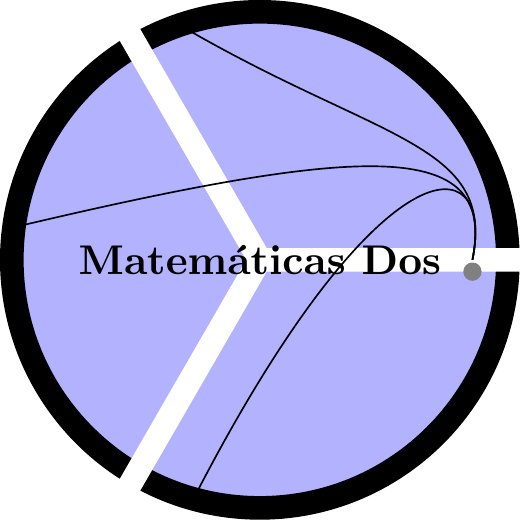

Curso de Matemáticas Dos UCES
2022-02-03
Capítulo 1 Prerrequisitos
El curso de matemáticas dos sólo tiene los siguientes prerrequisitios

1.1 Comportamentales
Tener disposición para hacer silencio y generar un buen ambiente de escucha en el aula de clase.
Tener la capacidad de acatar sugerencias para mejorar las técnicas de estudio ya adquiridas en procesos educativos pasados.
Saber tomar nota mientras el profesor explica los temas de ese día.
Repasar las notas de clase y complementar con la lectura del texto guía según se avanza en el desarrollo temático del curso.
1.2 Evaluativos
Tener los implementos básicos para una evaluación:
Lapicero.
Lapiz.
Borrador.
Calculadora.
Todos los celulares apagados.
Ir al baño antes de iniciar la evalualción.
No hay preguntas en el desarrollo de la evaluación.
Todas la maletas deben estar adelante.
1.3 Fechas de evaluación
Evaluación de entrada Virtual (10 \(\%\)) - Fecha: Lunes \(07\) de Febrero
Primer parcial Presencial (17.5 \(\%\)) - Fecha: Viernes \(25\) de Febrero
Segundo Parcial Virtual (17.5 \(\%\)) - Fecha: Viernes \(25\) de Marzo
Tercer Parcial Presencial (17.5 \(\%\)) - Fecha: Viernes \(29\) de Abril
Fin de clases 29 de Mayo
Cuarto Parcial Virtual (ó Parcial Final) (17.5 \(\%\)) - Fecha: Viernes \(03\) de Junio
1.4 Video motivacional
Todos tenemos un matemático interno
Título del video en youTube:
Las matemáticas nos hacen libres y menos manipulables. Página Web.
Así ve el mundo un matemático
Así ve el mundo un matemático Página Web
El tipo que te convencerá de que las matemáticas son la profesión del futuro
Neil Degrasse: Los responsables de enseñar ciencia a los niños no tienen ni idea de lo que es
Cuando ya no esté: Neil Degrasse
Jack Andraka - Ingredientes clave para innovar
Dan Kaminski: En internet hay siete llaves de seguridad y yo tengo una de ellas
1.5 Página para reforzar conceptos básicos
El siguiente link es una página para repasar conceptos basicos que requieras en tu formación. Página Web